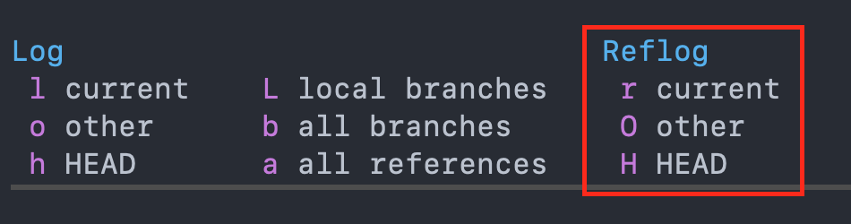
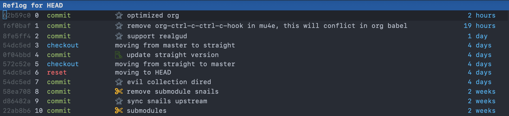
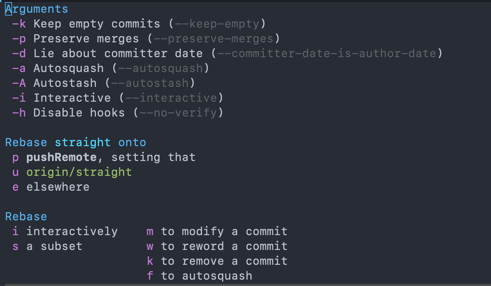
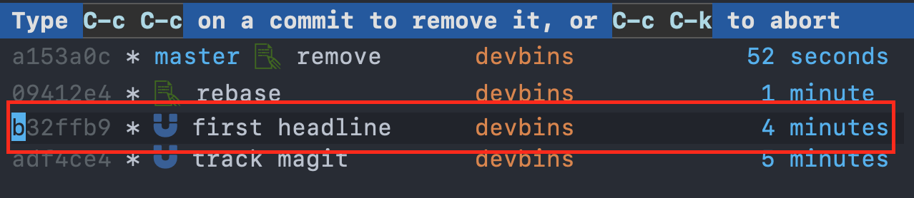
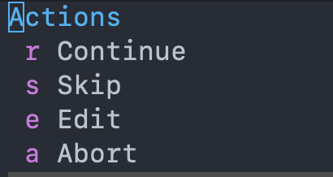
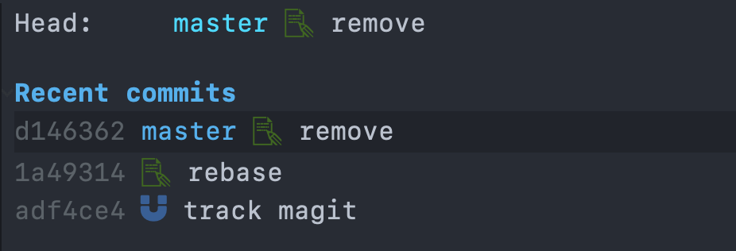
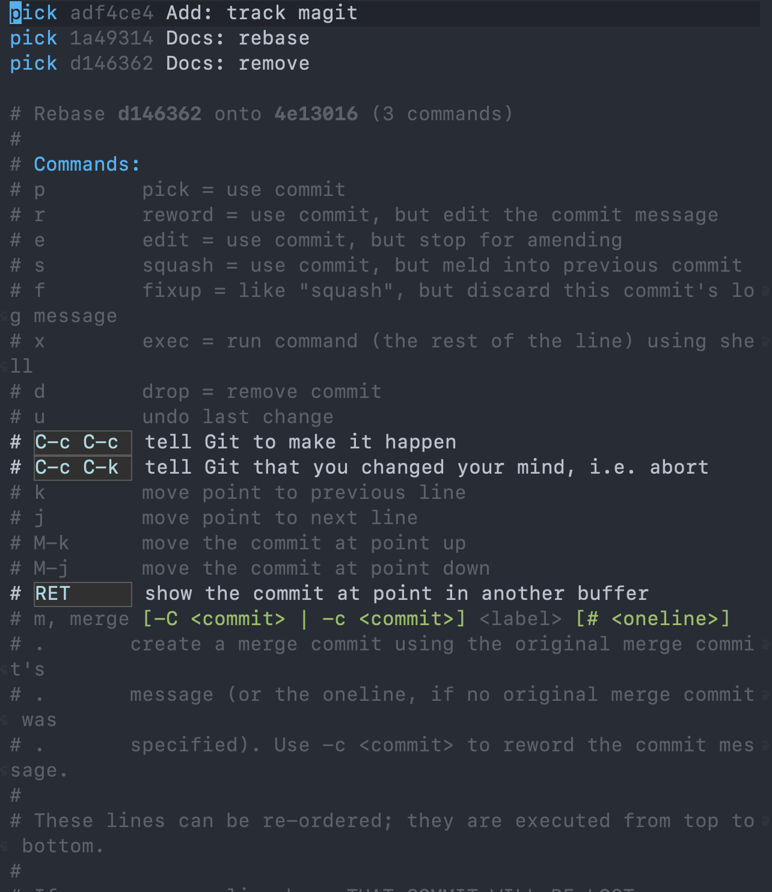
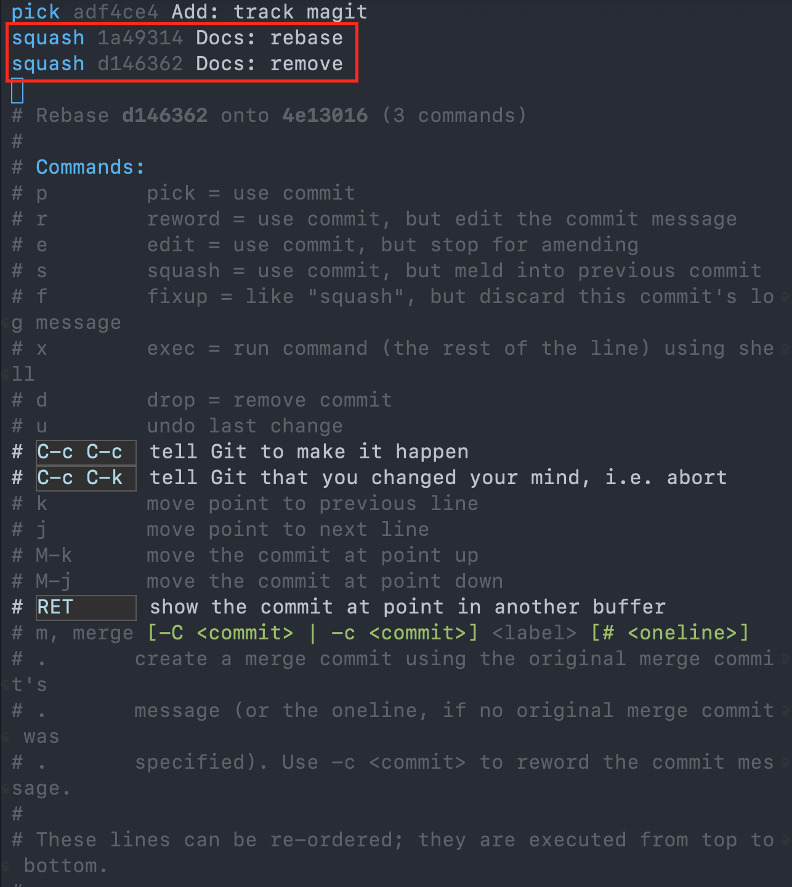
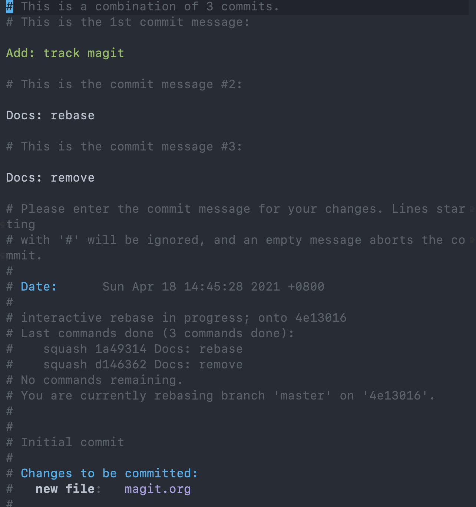
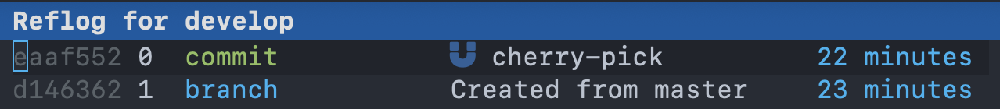

Magit 使用技巧
文章目录
Magit 介绍
Magit 是 Emacs 中的一个用于管理 Git 的工具，可以理解为 Git 的前端操作界面。和 SourceTree 客户端类似，不过功能却强大太多了，这也是我使用 Emacs 的一个重要理由。
Magit 中有许多非常强大的功能，这里介绍几个非常有用，但是又不容易记住的。
本文的 Magit 所使用的快捷键需要配合 evil-mode 使用。
Reflog
reflog 介绍
我们平时使用 git log 来查看提交的记录， git reflog 使用就相对较少了，大家比较陌生。
git reflog 可以用来查看你的所有操作记录，在特殊情况下是救命良药。
考虑这么一种情况，你用 git reset --hard HEAD~1 回退到上个版本，这时候你用 git log 发现少了一个 commit ，这时候就需要使用 git reflog 来找回被回退的 commit 。
Magit Reflog
在 Magit 要使用 reflog 只需要在 Magit Mode 中，按下 l ，就会弹出如下选项

接下来就可以根据自己的需要选择（按下括号中的字母）当前分支（r）、其它分支（O）、HEAD（H）。
当我按下 H ，选择 HEAD 的时候，如下所示。 
reflog 单独使用也就是个查看 log 的功能，但当它配合其它操作就可以发挥非常大的威力，比如 cherry-pick ， rebase 、找回丢失的 commit 。
Rebase
rebase 就不用多说了，日常使用频率挺高的一个。
在 Magit Mode 下，按下 r 会弹出具体操作的提示

主要包括 interactively(i) 、 modify(m) 、 reword(w) 、 remove(k) 、 squash(f) 这几个选项。
你也可以通过 Arguments 选项来一起添加参数。例如输入 -i ， Interactive 这行会高亮显示。
接着输入 k 尝试删除一个 commit

我们把光标移动到 first headline ，然后按下 C-c C-c ，这样就完成操作了。
如果发生了冲突，还需要先解决冲突，解决完冲突后按下 r ，弹出如下选项

接着根据自己的需要选择 Continue(r) 、 Skip(s) 、 Edit(e) 、 Abort(a) 中的一个，一般我们按下 r 选择 Continue 。
如果不想继续操作了，按下 a 选择终止，则所有操作无效。
除了上面这种常规操作，还可以在上面提到的 reflog 中使用 rebase ，操作都是类似的，先按下 r 选择需要的操作，然后根据需要进行下一步，这里都是类似的，我就不再啰嗦了。
Rebase 合并提交
假设我现在如下三个提交记录，我想要合并成一个，要怎么操作呢？

我们把光标移动到 track magit 也就是 commit-id 为 adf4ce4 的记录上，按下 r i ，出现如下交互界面

我们可以在每个 commit 上执行如下操作
| 快捷键 | 作用 |
|---|---|
| p | 使用这个 commit |
| r | 使用这个 commit，但是要修改消息 |
| e | 使用这个 commit，但是不仅仅是修改消息 |
| s | 使用这个 commit，和前一个进行合并 |
| f | 和 s 类似，但是不要注释 |
| d | 丢弃这个 commit |
所以我们如果需要合并这三个提交的话，只需要把 1a49314 和 d146362 使用 s 进行合并就行了。分别在这两个 commit 上按下 s ，如下所示

可以发现这两个 commit 从 pick 变成了 squash ，接着我们使用 C-c C-c 来使这些修改生效。

这里会让你进一步确认消息，如果没错的话，再次按下 C-c C-c ，这样就三个消息就合并成一个了。
Cherry-Pick
cherry-pick 平时用的比较少，不过在多分支开发的时候却非常有效。假如我们在 develop 分支上的一个 commit 想要合到 master ，这时候就可以使用 cherry-pick 了。
首先在 Maigt Mode 中，按下 Y 在弹出的选项中选择 Cherry-head ，表示的是要从哪里开始 Cherry-Pick 。
选择好了 Cherry-head 后，需要选择 Cherry-upstrem ，表示的是要 Cherry-Pick 到哪里。
我这里就是从 develop 到 master 。选好之后如下所示。
接着我们就可以在 eaaf552 这个 commit-id 上按下 A 表示我要对这个 commit 进行操作了，如下所示

接着再按下 A 选择 Pick ，这时会让你选择一下分支，这里就是 develop ，选中后回车，这样就结束了。
结合 Reflog 使用
上面的 cherry-Pick 使用起来有些麻烦，这里提供一个更简便的操作，也就是结合 Reflog 使用。
先使用 l O 打开 develop 的 Reflog ，如下所示

接着我们在 eaaf552 这个 commit 中按下 A ，依然是选择 Pick
再按下 A ，选择分支后回车，完成 Cherry-Pick 的操作。后的这几步都是一样的。
总结
今天主要介绍了 Magit 使用中的几个小技巧，在平时开发时会带来极大的便利，希望对你有帮助。